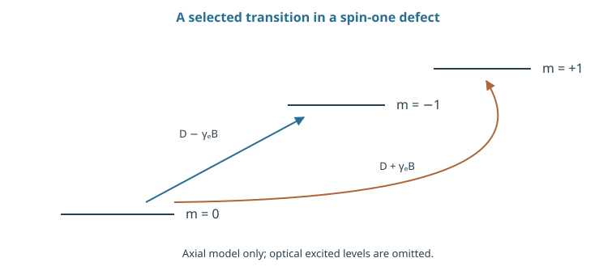
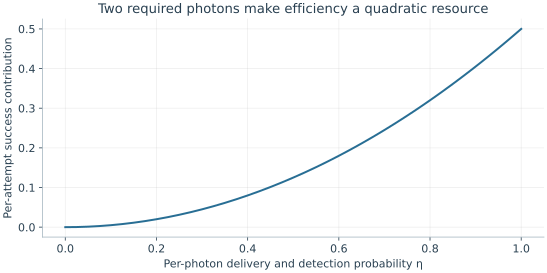

Starting point: Chapters 1–11; physical concepts and approximations are introduced as needed.
Anchor example: An optically addressable electron spin and a nearby nuclear memory.
This lesson includes explanations, worked examples, and problems with solutions. Advanced results whose proofs are outside the chapter are identified explicitly.
12.1 Localized States
A localized electron can be a processor, a nearby nucleus a memory, and an emitted photon a connection. The useful object is then a small quantum node.
12.1.1 Defects and spin levels
A crystal defect changes the local electronic energy levels and can bind an electron spin. For an idealized nitrogen-vacancy center ground manifold, use a dimensionless spin-one operator with \(m_s=0,\pm1\). An axial model is \(H=\hbar DS_z^2+\hbar\gamma_eBS_z\), omitting strain and transverse fields.
Its energies are \(E_m=\hbar Dm^2+\hbar\gamma_eBm\). The transition frequencies from \(m_s=0\) to ±1 are \(D\pm\gamma_eB\). A field can therefore separate the two lines so a narrow microwave pulse selects one pair as the qubit. The third spin level remains a possible leakage state. The parameters and omitted terms depend on the particular defect; this axial Hamiltonian is a tractable model, not a full microscopic derivation.
12.1.2 Initialization and microwave control
Optical pumping prepares a spin because excitation and relaxation pathways depend on the spin state. To see how an irreversible bias builds up, consider a toy cycle that transfers a fraction r of unwanted-state population to the target state and never transfers it back. After N cycles, the unwanted population is \(p_N=p_0(1-r)^N\).
Reverse pumping and additional levels give a nonzero limiting population, so real preparation must be measured. Microwave driving of the selected transition then gives the rotations from Chapter 3. Fluorescence brightness depends on spin, providing readout with overlapping photon-count distributions. Strong optical reset of the electron can also perturb nearby nuclei. Test the full node’s preservation, not merely the electron’s polarization.

Selecting two levels does not remove the third. The displayed frequencies follow from D Sz² + γe B Sz; strain, transverse fields, and optical levels require a fuller model.
Problem 12.1. Two independent required photons are each collected with probability 0.1. What is the collection contribution to success?
Worked solution
It is 0.1² = 0.01 before detector efficiency, protocol acceptance, or indistinguishability is included. This is a two-photon example, not a formula for every heralding protocol.
12.2 Spin Registers
12.2.1 Nuclear memories
A nuclear spin can store a qubit while the electron is used for optical attempts. Magnetic coupling between the two spins makes a nuclear transition depend on the electron state. For a two-level approximation to each, a secular interaction is \(H_{\rm int}=\hbar AZ_eZ_n/4\), with A an angular frequency.
Fixing electron Z eigenvalue to s=±1 changes the nuclear Hamiltonian by \(s\hbar AZ_n/4\). The nuclear transition shifts oppositely for the two values of s, with separation |A|. A pulse narrow enough to resolve this separation can act conditionally. If the electron flips unexpectedly during storage, it changes the nuclear phase accumulation. An idle nuclear coherence time therefore does not predict memory quality during repeated electron reset and photon generation.
12.2.2 Conditional operations
In basis 00,01,10,11, the secular interaction gives phases \((-At/4,+At/4,+At/4,-At/4)\). Their local-phase-invariant combination is \(-At\), so choosing \(At=\pi\) gives a controlled sign after the local corrections derived in Chapter 4.
The phase difference between an even and an odd basis state is only \(At/2\); it must not be confused with the invariant conditional phase. Both quantities are useful but answer different questions. A selective microwave or radio-frequency pulse can supply a conditional operation by a different mechanism, exploiting resolved transition frequencies. Specify its selectivity relative to A, its phase reference, and any spectator nuclear couplings. Adding a memory adds interactions that may help gates and harm isolation.
Problem 12.2. What is the magnitude of the phase difference between one even-parity and one odd-parity basis state under the stated interaction?
Worked solution
The energies are \(\pm\hbar A/4\), so their phase difference has magnitude \(At/2\). Single-spin phases and the sign convention must be tracked when specifying a target gate.
12.3 Optical Interfaces
12.3.1 Readout and heralded entanglement
For remote entanglement, consider a protocol in which emission and detection erase the identity of the emitting node. The accepted click pattern and optical mode overlap determine the resulting conditional state. A click alone is insufficient: background and distinguishable photons can produce the same classical record without the intended coherence.
A bright/dark fluorescence measurement of the electron uses the state-dependent count model of Chapter 9. A remote two-photon protocol adds collection, transmission, detector efficiency, and a permitted coincidence pattern. If each required photon is detected with probability η and an accepted pattern has conditional probability q, then the two-photon success contribution is \(s=q\eta^2\), under independence assumptions. This is a rate model for that protocol, not a formula for all heralded schemes.
12.3.2 Collection efficiency and scaling
At \(\eta=0.1\), a two-photon requirement contributes only 0.01 even before q and other imperfections. For attempts spaced by τ, the mean waiting time is \(\tau/s\). Raising collection efficiency can therefore change network speed quadratically in this model.
During the wait, the stored state must survive both idle evolution and repeated optical disturbance. If each failed attempt preserves a coherence factor c and attempts are independent with success s, the mean factor at first success is \(\sum_{n\ge1}s(1-s)^{n-1}c^{n-1}=s/[1-(1-s)c]\), before idle decay is included. This simple sum explains why small per-attempt disturbance can matter when success is rare. Report attempt counts and memory behavior together with fidelity conditioned on success.

This two-photon toy rate assumes independent detection and accepted-pattern factor q = 1/2. Conditional state quality also depends on mode overlap and false detections.
Problem 12.3. Why benchmark a memory during link attempts?
Worked solution
Optical excitation and reset can perturb the memory. Its idle coherence time does not capture those repeated disturbances; the relevant experiment reproduces the actual network duty cycle.
We next let photons carry the computation itself. Their weak interaction is both an advantage for transmission and a difficulty for gates.
Worked model check. Each required photon is detected with probability 0.2, accepted-pattern factor q is 0.5, and attempts take 10 μs. Estimate mean waiting time.
Worked solution
\(s=0.5(0.2)^2=0.02\); mean attempts are 50, so mean wait is 500 μs. False clicks and memory disturbance are excluded from this rate calculation.
These exercises draw on the whole chapter. Attempt each question before opening a hint, explain your reasoning, then compare it with the worked solution.
For the axial spin-one model with \(D/2\pi=2.87\) GHz, \(\gamma_e/2\pi=28\) GHz/T, and \(B=10\) mT, find the two transition frequencies \(D\pm\gamma_eB\) and their separation. Why does the field make one transition addressable as a qubit?
Hint 1
\(\gamma_eB/2\pi=280\) MHz.
Hint 2
A narrow pulse resolves lines separated by much more than its Rabi rate.
Worked solution
The transitions are at \(2.87\pm0.28\) GHz: \(3.15\) GHz and \(2.59\) GHz, separated by \(560\) MHz. A microwave pulse with a Rabi rate far below \(560\) MHz drives only one transition, so \(m_s=0\) and one of \(m_s=\pm1\) form the qubit. The other level is still there, as a leakage state for strong or poorly shaped pulses.
Optical pumping removes a fraction \(r=0.3\) of the unwanted population per cycle, starting from \(p_0=0.5\). Find the unwanted population after \(10\) cycles, and the number of cycles needed to reach \(10^{-3}\) in this toy model. Why is the real limit usually higher?
Hint 1
\(p_N=p_0(1-r)^N\).
Hint 2
Solve \(0.5\times0.7^N\le10^{-3}\).
Worked solution
After \(10\) cycles, \(0.5\times0.7^{10}\approx0.014\). Reaching \(10^{-3}\) needs \(0.7^N\le0.002\), so \(N\ge18\). Real pumping also has reverse processes and branching to other levels, giving a nonzero limiting population that no number of cycles can remove; it must be measured.
A two-photon remote protocol needs both photons detected, each with probability \(\eta=0.05\), and accepts a pattern with \(q=0.5\). Attempts take \(5\) μs. Find the success probability per attempt and the mean waiting time.
Hint 1
\(s=q\eta^2\).
Hint 2
Mean wait \(\tau/s\).
Worked solution
\(s=0.5\times0.0025=1.25\times10^{-3}\), so the mean wait is \(5\ \mu\mathrm s/1.25\times10^{-3}=4\) ms. Halving the collection efficiency would quadruple this. Collection is the dominant lever in two-photon schemes.
A nuclear memory keeps coherence factor \(c\) per failed link attempt, and attempts succeed with \(s=10^{-3}\). (a) Using \(s/[1-(1-s)c]\), find the mean coherence factor at first success for \(c=0.9999\) and \(c=0.999\). (b) Interpret the second result. (c) How small must \(1-c\) be compared with \(s\) for the memory to be useful?
Hint 1
\(1-(1-s)c\approx s+(1-c)\) when both are small.
Hint 2
So the factor is about \(s/(s+1-c)\).
Worked solution
(a) For \(c=0.9999\): \(10^{-3}/(1-0.999\times0.9999)\approx0.91\). For \(c=0.999\): about \(0.50\). (b) A per-attempt disturbance of only \(10^{-3}\) halves the stored coherence on average, because about a thousand attempts are needed. (c) Since the factor is about \(s/(s+1-c)\), the memory is useful only if \(1-c\ll s\): the disturbance per attempt must be much smaller than the success probability per attempt. Idle coherence times say nothing about this.
An electron–nuclear interaction \(H=\hbar AZ_eZ_n/4\) has \(A/2\pi=200\) kHz. (a) How long must it act to give a controlled sign (invariant phase \(At=\pi\))? (b) During storage, the electron flips unexpectedly at time \(t_f\) within a period of length \(t\). Show that the nuclear phase then differs from the intended one by an amount proportional to \(A(t-t_f)\). (c) Why does this make electron reset dangerous for nuclear memories?
Hint 1
\(t=\pi/A\).
Hint 2
The nuclear precession rate is \(\pm A/2\) depending on the electron state.
Worked solution
(a) \(t=\pi/A=1/(2\times200\ \text{kHz})=2.5\) μs. (b) The nuclear transition frequency shifts by \(\pm A/2\) depending on the electron state. If the electron flips at \(t_f\), the nucleus precesses at the other rate for the remaining \(t-t_f\), accumulating an extra phase of \(A(t-t_f)\) relative to the intended evolution. (c) Electron reset during link attempts flips the electron at random times, adding random nuclear phases of order \(A\) times the time the electron spends in the wrong state; with a large \(A\) a single reset can scramble the memory. Weakly coupled nuclei, or decoupling sequences, reduce this sensitivity.
A nuclear transition is shifted by \(\pm A/2\) with \(A/2\pi=2\) MHz depending on the electron state. A resonant radio-frequency pulse targets the transition for one electron state. (a) Using \(\Omega^2/(\Omega^2+\Delta^2)\) with \(\Delta=A\), estimate the unwanted rotation for \(\Omega/2\pi=200\) kHz. (b) What Rabi frequency keeps it below \(10^{-4}\), and what pulse duration does that imply? (c) What competes with longer pulses?
Hint 1
\(\Delta/\Omega=10\).
Hint 2
Require \(\Delta/\Omega\ge100\).
Worked solution
(a) \(1/(1+100)\approx0.0099\). (b) \(\Delta/\Omega\ge100\) requires \(\Omega/2\pi\le20\) kHz, so a \(\pi\) pulse takes \(1/(2\times20\ \text{kHz})=25\) μs. (c) Longer pulses expose both spins to decoherence and to electron state changes; shaped pulses, or conditional gates based on the interaction phase itself, achieve selectivity faster.
Room-temperature fluorescence readout of a defect gives, per shot, mean detected counts \(0.050\) for the bright state and \(0.035\) for the dark state. (a) Why is single-shot readout impossible here? (b) For \(N\) repeated shots, the difference in total counts is \(0.015N\) while the shot noise is about \(\sqrt{0.0425N}\). How many shots are needed for a signal-to-noise ratio of \(3\)? (c) How do repetitive nuclear-assisted readout schemes change this?
Hint 1
With fewer than one photon per shot, most shots record nothing in both states.
Hint 2
Solve \(0.015\sqrt N/\sqrt{0.0425}=3\).
Worked solution
(a) Most shots detect no photon in either state, and the count distributions overlap almost completely, so one shot cannot decide. (b) \(0.015\sqrt N/\sqrt{0.0425}=3\) gives \(N\approx1700\) repetitions with fresh preparations: an average, not a single-shot measurement. (c) Mapping the electron state onto a nuclear spin and then reading the electron many times, re-mapping in between, accumulates photons from one preparation, approaching single-shot readout of the nucleus, because the nuclear state survives many optical cycles.
A student wants a controlled sign from the electron–nuclear interaction and argues: “Even and odd basis states differ in phase by \(At/2\); a controlled sign needs a phase difference \(\pi\), so I choose \(At=2\pi\).” What gate results, and what is the correct choice?
Hint 1
The invariant combination is \(\phi_{00}-\phi_{01}-\phi_{10}+\phi_{11}=-At\).
Hint 2
An invariant of \(2\pi\) is equivalent to none.
Worked solution
The local-phase-invariant combination is \(-At\). At \(At=2\pi\) it equals \(-2\pi\), which is no conditional phase at all: the gate is a product of local \(Z\) rotations, and it entangles nothing. A controlled sign needs the invariant to be \(\pi\), so \(At=\pi\), after which local corrections remove the remaining single-qubit phases. The even–odd difference \(At/2\) is a real phase but not the quantity that local operations cannot remove.
Two nodes \(L\) km apart are linked through a midpoint station by fiber with loss \(0.2\) dB/km, so each photon travels \(L/2\). (a) Find the transmission per photon for \(L=50\) km. (b) Compare the success scaling of a two-photon protocol (\(s\propto\eta^2\)) with a single-photon protocol (\(s\propto\eta\)) at this distance. (c) What trade-off do single-photon schemes usually accept?
Hint 1
\(25\) km gives \(5\) dB, a factor \(10^{-0.5}\).
Hint 2
The two-photon rate scales as transmission squared.
Worked solution
(a) \(25\) km of fiber gives \(5\) dB, transmission \(10^{-0.5}\approx0.32\). (b) A two-photon protocol loses \(0.32^2\approx0.1\) from fiber alone; a single-photon protocol loses only \(0.32\), about three times better, and the advantage grows with distance. (c) Single-photon schemes need interferometric phase stability over the whole link and typically trade fidelity for rate (they herald a state with a known admixture of the wrong component), whereas two-photon schemes are more robust to phase drift but slower.
A node holds \(M\) independent communication qubits and attempts entanglement with all of them in parallel each round, with success probability \(s=10^{-3}\) per qubit. (a) Find the probability that at least one succeeds in a round, for \(M=1\) and \(M=50\). (b) By how much does the mean waiting time fall? (c) What new requirements does multiplexing impose?
Hint 1
\(1-(1-s)^M\approx Ms\) for \(Ms\ll1\).
Hint 2
\(1-(0.999)^{50}\approx0.049\).
Worked solution
(a) \(M=1\): \(10^{-3}\). \(M=50\): \(1-0.999^{50}\approx0.049\). (b) The mean number of rounds falls from \(1000\) to about \(20\), nearly fifty-fold. (c) Multiplexing needs many optically addressable qubits per node, distinguishable photons (in time, frequency, or space) so the detector knows which qubit succeeded, and memories that are not disturbed by the attempts on their neighbours. The rate gain is paid for in hardware and crosstalk control.